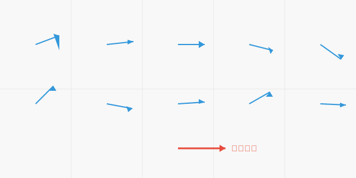

## フォン=ミーゼス分布が解き明かす図形の特徴 ### 〜データサイエンスの幾何学への応用〜 --- ### 自己紹介 <div class="profile-container"> <div class="profile-left"> * さめ(meg-ssk) * 🧑💻 フリーランスのソフトウェアエンジニア * 得意分野: * 📸 コンピュータビジョン (画像認識/点群処理) * 🌍 空間情報処理 (地理情報/リモートセンシング) * ☁️ クラウドインフラ設計/IaC (AWS, GCP) * [GitHub](https://github.com/s-sasaki-earthsea-wizard) * [YouTube](https://www.youtube.com/@SyotaSasaki-EW) * [Speaker Deck](https://speakerdeck.com/syotasasaki593876) </div> <div class="profile-right"> <img src="assets/images/avatar.png" alt="avatar" height="350px" width="350px"> </div> </div> --- ### ハイライト <div class="simple-box"> * フォン=ミーゼス分布は「方向の分布」を表す分布関数である * 重要な応用例を数多く持つ * 大きさだけではなく方向を持つ量(ベクトル)の分析 * 風向や図形の法線分布など * **今日は基礎的なコンセプトとオープンデータを使った分析例を示します！** </div> --- ### 簡単な例  <div class="highlight-box"> * 平均すれば右を向いているが、ひとつひとつのサンプルの向きは揺らぐ * 方向の分布を表す分布関数とそれを特徴付けるパラメータは？ </div> --- ### フォン=ミーゼス分布 $$ f(\theta) = \frac{\exp(\kappa \cos(\theta - \mu))}{2\pi I_0(\kappa)} $$ <div class="highlight-box"> * 言うなれば2次元のベクトルの向きの正規分布 * $\mu$: 平均 * $\kappa$: 集中度 </div> --- ### フォン=ミーゼス分布がなぜ必要？ <!-- TODO: Create polar histogram--> <div class="highlight-box"> * 角度は周期性があるのでそれを考慮した分布関数が必要 * 連続量と同等に扱うと平均などの解釈に不都合 </div>